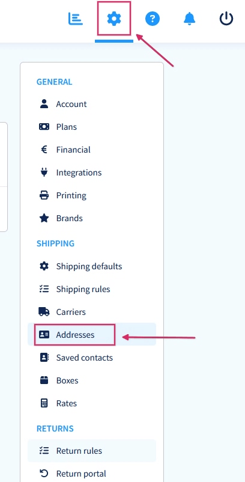
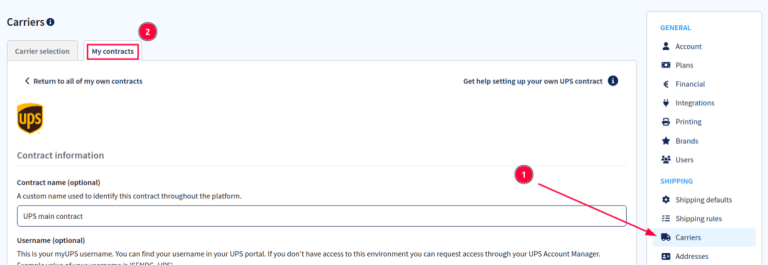

Configuración de Sendcloud¶
Sendcloud es un agregador de servicio de envío que facilita la integración de transportistas europeos en Odoo. Una vez integrado, los usuarios pueden seleccionar transportistas en las operaciones de inventario de su base de datos de Odoo.
Configuración en Sendcloud¶
Crear una cuenta y activar transportistas¶
Para empezar, vaya a la plataforma de Sendcloud para configurar su cuenta y generar las credenciales de conector. Inicie sesión con su cuenta de Sendcloud, o cree una si es necesario.
Nota
Para crear una nueva cuenta, Sendcloud le solicitará un número de identificación tributaria o un número EORI. Tras completar la configuración de la cuenta, active (o desactive) los transportistas que utilizará en la base de datos de Odoo.
Importante
La integración de Odoo con Sendcloud funciona en los planes gratuitos de Sendcloud solo si vincula una cuenta bancaria, pues Sendcloud no realiza envíos de forma gratuita. Necesita un plan de pago de Sendcloud para poder utilizar reglas de envío o contactos de transportistas personalizados.
Configuración del almacén¶
Una vez que inice sesión en la cuenta de Sendcloud, vaya a y complete el campo dirección de almacén.
Para permitir que Sendcloud también procese devoluciones se necesita de una dirección de devolución. En la sección varios, hay un campo denominado nombre de la dirección (opcional). Ahí debe ingresar el nombre del almacén en Odoo, y los caracteres deben ser exactamente los mismos.
Example
Almacén #1PredeterminadaAlmacén #1WHMi empresa (San Francisco)Mi empresa (San Francisco)Observe como la información ingresada en el campo almacén para ambas configuraciones es exactamente igual.
Generar credenciales de Sendcloud¶
En su cuenta de Sendcloud, vaya a en el menú a la derecha. A continuación, busque Odoo nativo y después haga clic en conectar.
Tras hacer clic en conectar, la página lo redirigirá a la página de ajustes API de Sendcloud en donde se generan las claves pública y secreta. El siguiente paso es darle un nombre a la integración. La convención para los nombres es la siguiente: Odoo NombredelaEmpresa, en donde NombredelaEmpresa es el nombre de la empresa del usuario (por ejemplo, Odoo StealthyWood).
Después, seleccione la casilla a lado de Puntos de servicio y seleccione los servicios de envío para esta integración. Después de guardar, se generan las claves pública y secreta.

Configuración en Odoo¶
Para garantizar una integración fluida de Sendcloud con Odoo, instale y vincule el conector de envío de Sendcloud a la cuenta de Sendcloud. Después, configure los campos de Odoo para que Sendcloud pueda extraer con precisión los datos de envío para generar etiquetas.
Instalar el módulo Envío por Sendcloud¶
Después de que haya configurado la cuenta de Sendcloud, es momento de configurar la base de datos de Odoo. Para empezar, vaya al módulo Aplicaciones de Odoo, busque la integración de Envío por Sendcloud e instálela.
Configuración del conector de envío por Sendcloud¶
Una vez instalado, active el módulo Envío por Sendcloud en . El ajuste conector de Sendcloud se encuentra en la sección conectores de envío.
Después de activar el conector de Sendcloud, haga clic en el enlace de métodos de envío de Sendcloud que se encuentra debajo del conector. Una vez que esté en la página de métodos de envío, haga clic en crear.
Truco
También puede acceder a los métodos de envío en .
Complete los siguientes campos del formulario del nuevo método de envío form:
Método de envío: escriba
Sendcloud DPD.Proveedor: seleccione Sendcloud en el menú desplegable.
Producto de envío: establezca el producto que se configuró para este método de envío o cree un nuevo producto.
En la pestaña configuración de SendCloud, introduzca la clave pública de Sendcloud.
En la pestaña configuración de SendCloud, introduzca la clave secreta de Sendcloud.
Guarde el formulario de forma manual al hacer clic en el icono de nube a lado de las migas de pan Métodos de envío / Nuevo.
Después de configurar y guardar el formulario, siga los siguientes pasos para guardar los productos de envío:
En la pestaña configuración de SendCloud del formulario del nuevo método de envío haga clic en el enlace que dice Cargar sus productos de envío de Sendcloud.
Seleccione los productos de envío que la empresa desea usar para entregas y devoluciones.
Haga clic en Seleccionar.
Example
Ejemplo de productos enviados por Sendcloud configurados en Odoo:
DPD Home 0-31.5kgDPD0.0031.50Países: Austria Bélgica Bosnia y Herzegovina Bulgaria Croacia República Checa Dinamarca Estonia Finlandia Francia Alemania Grecia Hungría Islandia Irlanda Italia Letonia Liechtenstein Lituania Luxemburgo Mónaco Países Bajos Noruega Polonia Portugal Rumanía Serbia Eslovaquia Eslovenia España Suecia Suiza
DPD Return 0-20kgDPD0.0020.00Bélgica Países Bajos
Truco
Sendcloud no proporciona claves de prueba cuando una empresa prueba el envío de productos desde Odoo. Esto supone que, si crea un paquete, se le hará un cargo a su cuenta de Sendcloud, a menos que cancele el envío en las primeras 24 horas de su creación.
Odoo tiene una capa de protección incorporada contra cargos no deseados al usar entornos de prueba. Si se encuentra dentro de un entorno de prueba y utiliza un método de envío para crear etiquetas, esas etiquetas se cancelan de forma automática después de su creación. Es posible alternar entre los ajustes del entorno de prueba y de producción con sus respectivos botones inteligentes.
Información de envío¶
Si quiere usar Sendcloud para generar etiquetas de envío, debe llenar la siguiente información de forma correcta y total en Odoo:
Información del cliente: al crear una cotización, asegúrese que el número telefónico, la dirección de correo electrónico y la dirección de envío del cliente sean válidas.
Para verificar, seleccione el campo Cliente para abrir su página de contacto. Ahí agregue la dirección de envío en el campo Contacto, el número de celular y la dirección de correo electrónico.
Peso del producto: asegúrese de que todos los productos de una orden tengan un peso especificado en la pestaña Inventario de su formulario de producto. Consulte la sección Peso del producto de este artículo para obtener instrucciones detalladas.
Dirección del almacén: asegúrese de que el nombre y la dirección del almacén en Odoo coincidan con el almacén definido con anterioridad en la configuración de Sendcloud. Consulte la sección de configuración del almacén de la documentación externa de envíos para obtener detalles sobre la configuración del almacén en Odoo.
Generar etiquetas con Sendcloud¶
Al crear una cotización en Odoo, agregue el envío y elija Producto de envío de Sendcloud, luego valide la entrega. Los documentos de la etiqueta de envío se generan de forma automática en el chatter e incluyen lo siguiente:
Etiqueta(s) de envío según el número de paquetes.
Etiqueta(s) de devolución si el conector de Sendcloud está configurado para devoluciones.
Documento(s) aduanero(s) si el país de destino lo(s) requiere.
Además, ahora está disponible el número de rastreo.
Importante
Sendcloud hace un cargo automático a la cuenta configurada cuando se crean etiquetas de devolución.
Preguntas frecuentes¶
El envío es demasiado pesado¶
Si el envío es demasiado pesado para el servicio de Sendcloud que se configuró, entonces el peso se divide para simular varios paquetes. Los productos tendrán que ser puestos en distintos paquetes para validar el traslado y generar etiquetas.
También se pueden configurar reglas en Sendcloud para usar otros métodos de envío cuando la carga es muy pesada. Sin embargo, tenga en cuenta que estas reglas no se aplicarán al cálculo del precio de envío en el cálculo de la orden de venta.
Contratos de transportista¶
Para hacer uso de los precios personalizados de un contrato directo con los transportistas puede subir un archivo CSV. Inicie sesión en Sendcloud, vaya a y luego seleccione el contrato correspondiente.
En la sección Precios del contrato, haga clic en Descargar CSV y complete los precios del contrato en la columna Precio de la plantilla del archivo CSV.
Advertencia
Asegúrese de que el archivo CSV incluye los precios correctos para evitar cualquier error.

Una vez que haya terminado de completarlo, Suba el archivo CSV a Sendcloud y luego haga clic en Guardar estos precios.
Medición del peso volumétrico¶
Muchos transportistas tienen varias medidas de peso. Está el peso real de los productos en el paquete y el peso volumétrico (El peso volumétrico es el volumen que ocupa un paquete cuando está en tránsito. Es decir, el tamaño físico de un paquete).
Truco
Verifique si el transportista seleccionado ya tiene fórmulas definidas para calcular el peso volumétrico.
No es posible calcular la tarifa de envío¶
Primero verifique que el producto a enviar tenga un peso compatible con el método de envío seleccionado. Si el peso es correcto, entonces verifique que el país de destino (desde la dirección del cliente) sea compatible con el transportista, lo mismo debe suceder con el país de origen (dirección del almacén).